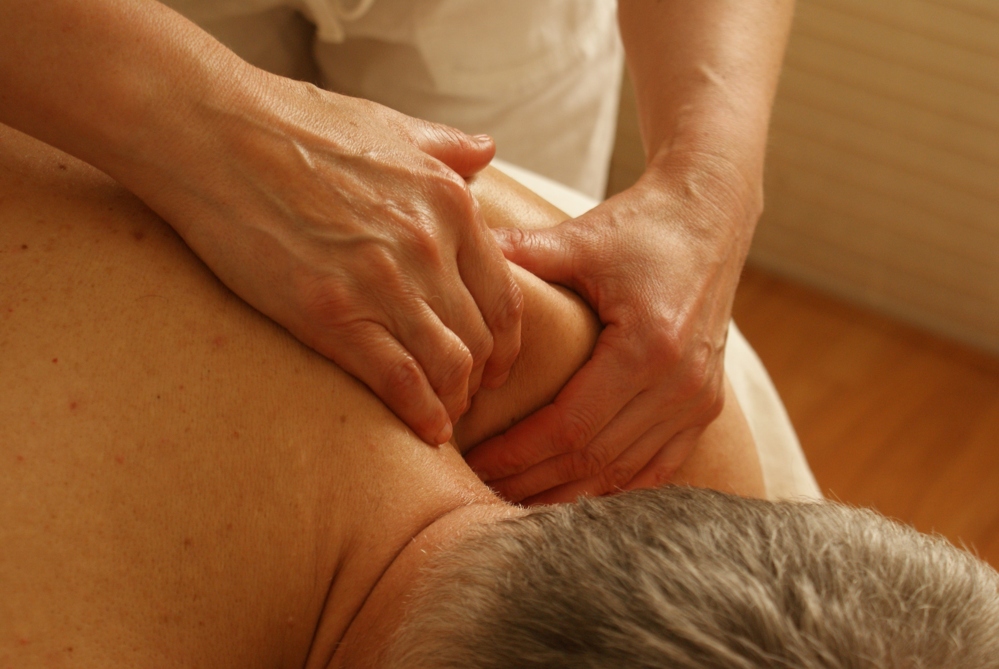
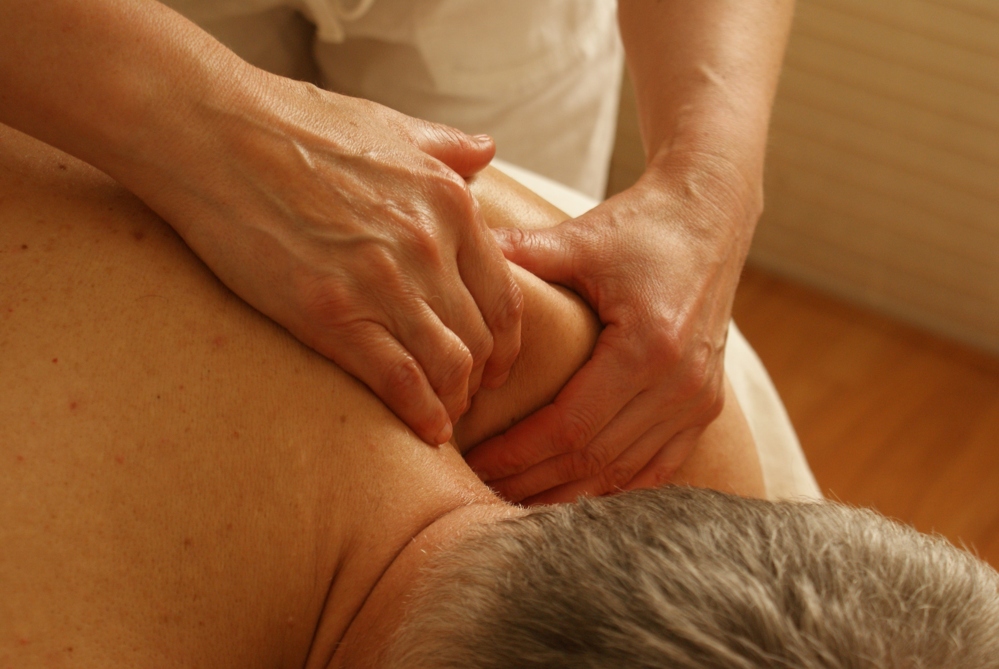

Derinin kılcal damarlarının genişlemesi ve hiperemisini
Derinin sebase bezlerinin daha fazla sebum salgılaması sağlanarak derinin yumuşatılmasını
Dolaşım hızının artması, lenfa drenajının kolaylaşmasını
Sinir uçlarına etki etmesi nedeniyle sakinleşme ve dinlenme sağlanmasını
Ter bezlerinin işlevinin artmasını
Doku ve kaslardaki toksik maddelerin atılmasını sağlamaktadır.
Kan dolaşımının arttırılarak kas, organ ve kemiklerin beslenmesini, Kasların tonusunu yükselterek kuvvetlenmesini, Karın organlarına uygulanarak sindirimin kolaylaşmasını ve konstipasyonun çözülmesini sağlamaktadır.
Madde alışverişi arttırılmasını, Fibrozların açılmasını sağlayarak eklemlerdeki sertliği önlemesini Kas kirişleri ve eklem ligamentlerinin gevşemesini önlemesini Eklem hiperemisini Skarların gevşemesini ve artrozların çözülmesini sağlar.
Kasların, derinin ve sinir uçlarının uyarılmasını, Sakrum üzerine uygulandığında sinirsel etki ile döndürülmesini, Madde alışverişini sağlamaktadır 5) Vibrasyon (Titreşim); Skarların gevşemesi ve kas spazmlarının çözülmesini, Gevşek kasların sıkılaşmasını, Vertebral ankilozların uyarılmasını, Karın organlarına uygulandığında gaz gibi problemlerin çözülmesini, Sinirlerin tespitini sağlamaktadır.